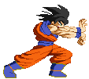
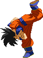
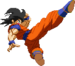
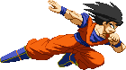

Kamehameha (LV1)
All-time classic super energy attack.
In this Level 1 incarnation, Goku fires a 5-hit energy ball.
By holding Up, Goku will launch the blast diagonally into the air,
so it can act as an anti-air and is a great way of zoning.
The aerial version will launch diagonally downwards.
Upon hitting the ground, the blast causes a bit of splash damage;
if the opponent comes into contact with this,
they still get damaged.


Bicycle Kick (LV1) (bounce-juggles)
One of the best moves in the game; Goku teleports just above the opponent's current position and then
delivers a hard-hitting overhead kick, which does not take the combo damper into account, so it always deals real meaty damage.
The impact smashes the opponent hard to the ground after which they bounce up, allowing for a juggle combo.
Upon landing on the ground, you're able to supercancel into a Kamehameha.
Super Kamehameha (LV2)
The second level of the Kamehameha changes the blast into a 20-hit beam, if it's launched right away, that is.
You're able to hold down the punch button to charge up the attack. The longer you charge, the more hits will be added to the beam.
Once it reaches its maximum, Goku will automatically launch it and it'll be 40 hits at the most and unblockable.
This version retains the option to launch it diagonally into the air, but loses the option to launch it diagonally downward from the air.

Meteor Kick (LV2)
Souped-up version the Bicycle; in this version, Goku automatically performs a second teleport attack
as soon as the Bicycle Kick connects. The second attack has Goku teleporting back to the front and delivering a launching kick.
As the opponent is launched quite high (and is unable to air-recover), you're able to plan a nice juggle combo on them.
Kaioken Kamehameha (LV3)
Final level of the Kamehameha beam attack. This was previously just a replacement of his
Kaioken in Team and Co-op modes, but proved so popular that we made it available in single player modes as well.


Final Meteor Kick (LV3)
For the longest time a 'secret' move, as it was never detailed in his previous movelists.
But here it is! The Level 3 version of his Bicycle Kick is very damaging. It follows up the Meteor Kick with yet another
teleporting kick, this time again appearing above the opponent and delivering a devastating downward kick, smashing them to the ground.


Kaioken (LV3)
Goku briefly powers up and then rushes forward. If he touches the enemy, he'll explode into a powerful autocombo,
ending with a cinematic power kick. When performed in Hope Mode, depending on how far your Hope Bar is filled, this ender is replaced by one of these Finishers:
Lv1 - Typhoon Kick.
Lv2 - Back Breaker.
Lv3 - Final Spirit Bomb.
When performed against the Saibaman, or against Piccolo when he has Clones out, perhaps in some other situations as well, Goku will perform the Kaioken Kamehameha instead of the Kaioken autocombo, to avoid certain bugs that might otherwise occur against these characters.
Lv1 - Typhoon Kick.
Lv2 - Back Breaker.
Lv3 - Final Spirit Bomb.
When performed against the Saibaman, or against Piccolo when he has Clones out, perhaps in some other situations as well, Goku will perform the Kaioken Kamehameha instead of the Kaioken autocombo, to avoid certain bugs that might otherwise occur against these characters.